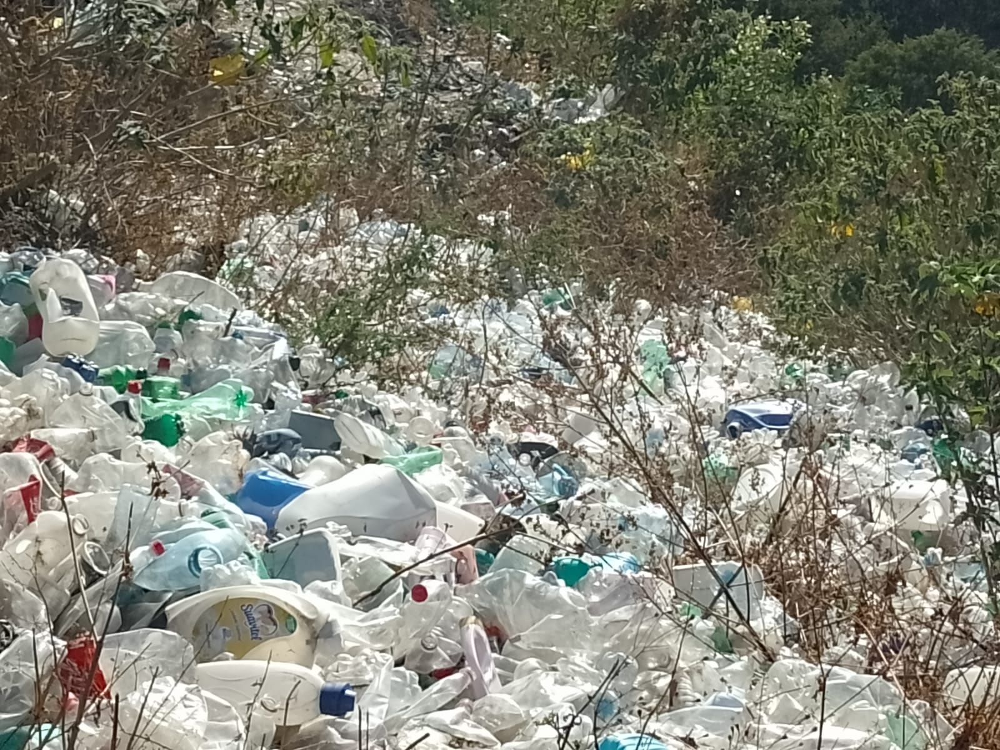
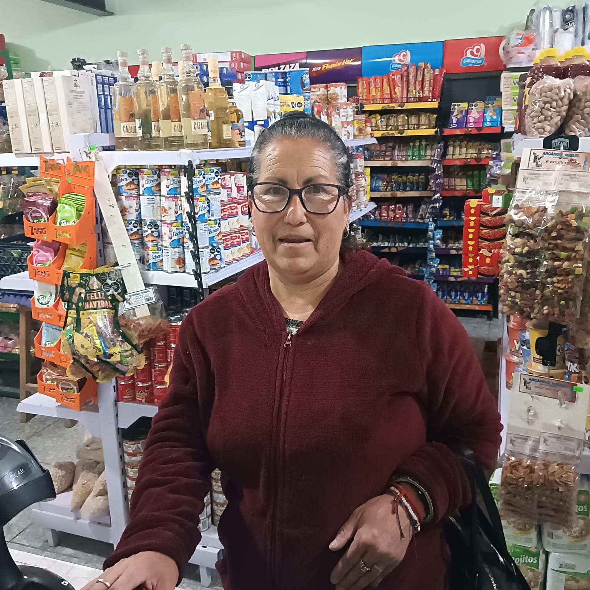
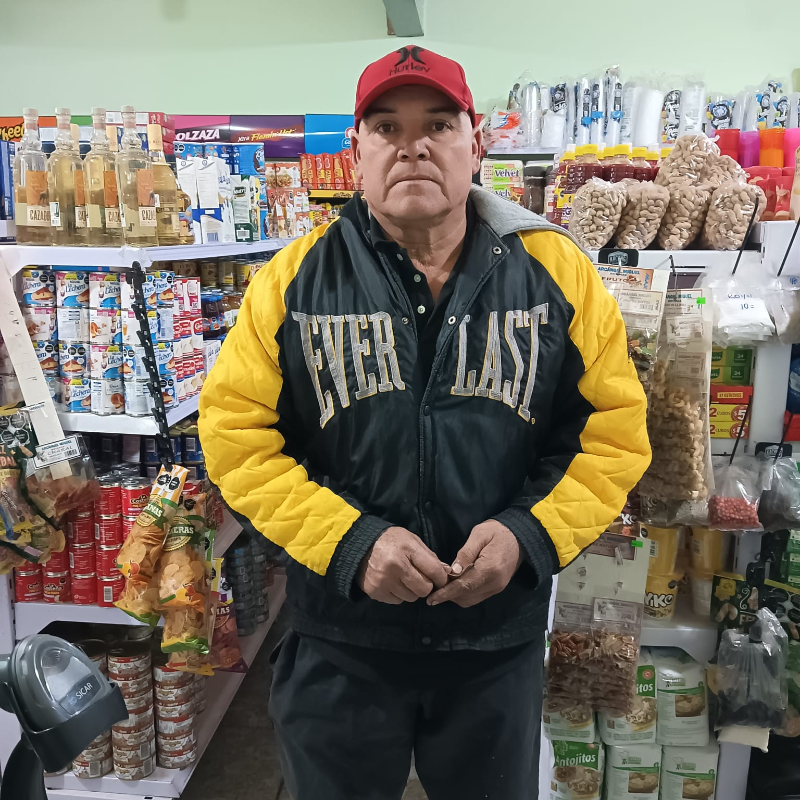
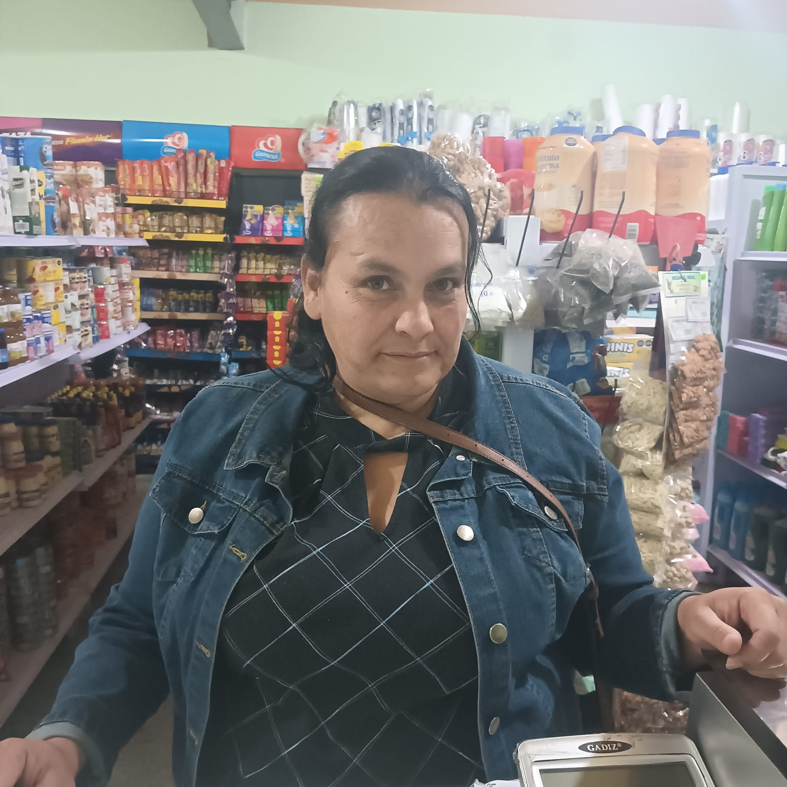
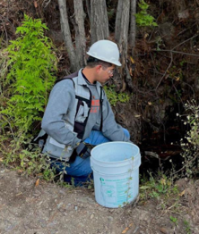
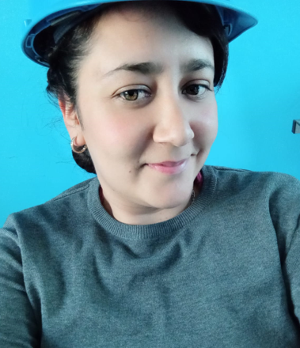
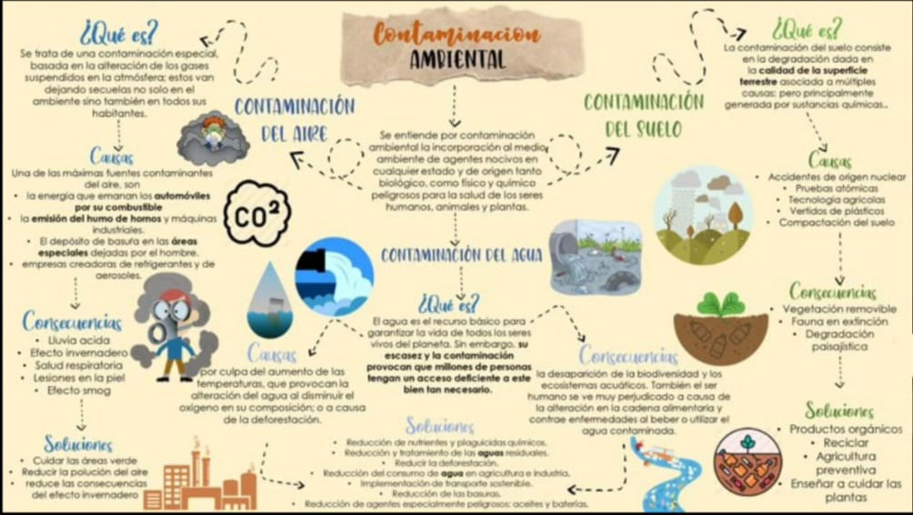

La contaminación en Topia Durango es un problema grave que se ha estado manifestando durante muchos años, afectando la salud de los habitantes y el medio ambiente. Algunas de las causas de esta problemática son: la minería, la agricultura, la ganadería, la industria y la falta de sistemas de tratamiento de agua.
Además, la quema de combustibles fósiles genera contaminación del aire y afecta la calidad de vida de la población. La basura en las calles y arroyos transporta contaminantes químicos que dañan la biodiversidad.
La contaminación ha tenido un impacto negativo en la salud de los habitantes, la economía local y la biodiversidad. La degradación del medio ambiente ha afectado la producción agrícola y ganadera, reduciendo la rentabilidad de estas actividades en la región.

Estas son algunas opiniones de los habitantes de Topia sobre la contaminación en la comunidad:

"La contaminación daña el medio ambiente y a nuestra salud." - Rebeca Rodríguez |

"Esta mal la contaminación, tenemos que poner más atención en lo que desechamos y desperdiciamos." - Victor Arreola Pineda |
"Es un mal necesario, ya que es para actividades económicas para mantener el trabajo de la comunidad." - Alexis Peinado |

"La contaminación en Topia es un tema que se debe tratar y mejorar." - Aida Bueno |

"Los niños deben aprender a cuidar su entorno desde pequeños." - Hector Zavala |
"La concientización de las personas, podrian hacer publicaciones en las redes sociales, ya que hoy en dia la mayoría de la población tiene móvil en su mano." - Jesús Zavala |
"Principalmente afectan la contaminación de los residuos mineros, llevando a esto las enfermedades de cáncer, silicosis, alergias, afectaciones en la vista y las vias respiratorias." - Ádrian Zavala |

"Tiene un impacto muy negativo en toda la comunidad, debido a que esta afectando a todo el ambiente." - Ofelia Zavala |
"Yo ya separo mi basura, ¡todos deberíamos hacerlo!" - Miguel Castro |
La contaminación ambiental en Topia es un problema creciente, principalmente debido a la acumulación de basura y los residuos generados por las minas. El manejo inadecuado de desechos ha afectado el paisaje y la salud de los habitantes, mientras que la actividad minera contribuye a la contaminación del aire, agua y suelo. Es crucial que la comunidad tome conciencia de estos problemas y se promuevan soluciones sostenibles para proteger el medio ambiente y mejorar la calidad de vida en la región.
